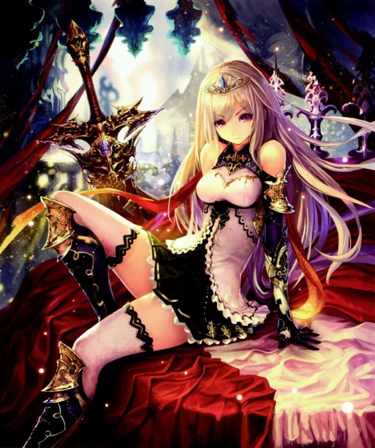

第四百五十九章 加戏的月姬要求加薪
“那个，我的名字是兰，不是奥丁。”
站在云上的蓝子挠了挠自己的脸颊尴尬的回复地上的索列姆，然后只见她一招手，被投射的冈格尼尔便被召唤回来，与之一同被召唤的，是枪间的金色苹果，并没有被扎穿，而是像黏在枪间一样，金苹果被冈格尼尔完好的带了回来。
“金苹果我拿回来了，姐姐。”蓝子从枪间取下金苹果，然后递给了站在边上的……变了模样的月姬。
“嗯，做得很好。”月姬摸了摸蓝子的头发，然后接过蓝子子手上的金苹果，看着底下的精灵玩家，“你们似乎忘记了你们的首要任务不是打败索列姆，而是要夺回金苹果。”
“那、那个不是风之精灵王欧萝妲吗？”
朔夜看着天空云端上的风精灵惊讶的张了张嘴，她又看向尹登仙女，她可是还记得这位仙女说过，精灵只有一位王，现在事实摆在面前，她很好奇伊登仙女要怎么解释。
只见伊登看了眼朔夜，然后抬起头看向天空中的欧萝妲高声问道：“精灵只有一位王，不可能有其他君主！阁下是何人？”
“此身为精灵王，却非精灵之王，吾所统御乃细微自然之灵，吾之所念便为风之意志，吾之所向，便是风之所往。风之灵将尔等祈愿送往绯之月，送往翠之梦，亦、送入吾之耳。”月姬点了点自己的耳朵，用言语为自己的假想世界特别的身份做出补充设定，她看向被一堆人护在身后的亚丝娜——原本化身精灵王蒂塔尼亚作为最强辅助的亚丝娜身边自然不可能没有护卫——
“汝、刚刚又变回了原本的姿态呢，蒂塔尼亚哟，怎么样？那无与伦比的力量，有趣吗？”
“一点也不有趣。”亚丝娜摇了下头回答道，说什么无与伦比的力量，真是夸张呢，不就是超强辅助能力吗，虽然效果就如同她形容的那样，但是这能力要是没有结衣支援，仅仅依靠自己，是根本没办法用好的。
“虽然不知道你是谁，但是你触怒了老夫！”地面上的索列姆咆哮着，然后对着月姬射出了一支冰枪。
“呵呵，也是，一枚种子并不能给汝提供多少力量。”月姬笑了笑，在她面前的空气中荡开一圈圈涟漪，急射的冰枪很轻松的就被拦截了下来，然后她挥了挥手指，他身前的冰枪转了个弯，哪来的又回哪去了，当然，索列姆并不会这样简单的击中，用手上的小斧将冰枪斩碎。
没有太在意索列姆的袭击，月姬对着亚丝娜示意了下手上的金苹果，“蒂塔尼亚哟，要吾帮汝一把吗？”
“不、不用了，比起这个，如果您能帮我们打败索列姆，那真的是感激不尽。”
亚丝娜摇了摇头拒绝了月姬的提议，转而提出了一个请求，毕竟对方看起来真的很强的样子，在他们已经山穷水尽的时候，所能指望的，就只有这位横空出世的神秘NPC了。
“吾已经帮了汝一次。”月姬笑眯眯的回答道，似乎并没有答应亚丝娜请求的意思，“汝的子民明明知道，夺回金苹果才是首要目的，却选择消灭索列姆，真是愚蠢的精灵。”
“……”我的子民？
亚丝娜感觉有点尴尬，下面的一众玩家也在议论纷纷，对现状一头雾水。
“若是汝愿意归顺于吾，吾可再出手一次，为汝驱逐霜巨人，亦或者帮汝真正取回光之精灵的荣耀，汝自可自行将其驱逐。”
“你真的要与老夫为敌吗，精灵的强者？”索列姆沉着脸用低沉的语气向月姬发出质问。
“强大的精灵，若你帮我击败索列姆，你将赢得阿斯加德的友谊！”依旧被三名霜巨人纠缠着的雷神索尔高声的向月姬发起组队邀请。。
“……”月姬只是瞟了眼索尔，却并没有太在意索尔的话，“吾为精灵王，而非精灵，吾无意与任何人为敌，只要尔等愿意臣服。”月姬俯视着索列姆优哉游哉的说道，居高临下的姿态宛若神祇对凡人的宣告。
“混账！！！”
“愤怒？汝又能如何？勿说此刻汝已经被这些小东西耗去了大半的力量，甚至还身死一次，即使是全盛之时，汝亦不会是吾一合之敌。”
“哼！狂妄！”
“不服？”月姬挑了挑眉，然后目光在战场边缘游移，最后还是落到了索列姆的身上，“战场边缘潜伏的那位就是如汝的底牌？。”
“你！”索列姆的脸上露出了震惊的神色。
“真是一场好戏呢。”月姬笑着点了点头，“真真假假的争斗，将之隐藏起来，约顿的女王，阿萨的诸神，九大国度注视着这场闹剧的诸位都被汝等骗了过去……很遗憾，风，无所不在，融入风中的声音，便会传入吾之耳……”
“……约顿的哀叹，华纳的愤恨，穆斯贝尔的狂热，瓦特的野望，亚尔夫的歌咏，尼福尔的暗谋，赫尔的欢呼，阿萨的秘闻，除了中庭，九大国度没有什么瞒得了吾！”
“若真是如此，那老夫便留你不得！”索列姆狠狠地盯着月姬沉声说道。
“……”月姬没有回话，只是挑了挑眉，静静地看着索列姆，突然只见索列姆动了，不过却不是向月姬发起进攻，而是伸出拳头向着空无一物的背后挥去。
“愚蠢的阿萨神族，只会这些偷鸡摸狗的伎俩！”
在索列姆的拳头下，一个巨人从空气里被轰了出来，是之前向索列姆发起过一背刺却被撂倒的巨人，第二次背刺，显然也没有取得一个满意的成绩。
啪啪啪啪——
高高的空中传来一阵掌声，“不愧是霜巨人之王，果真了得，洛基，汝真的有认真出手吗？汝的身份与身手不相称啊！”
“……”被天空中的风之精灵王称为洛基的巨人跌坐在地上，耸了耸肩，并没有回答月姬的质疑，他的身体渐渐地淡去，似乎又要暂时潜伏起来，就在他要完全消失的时候……
“贼子休走！”
洛基的脚踝被索列姆抓住，肌肉鼓动青筋虬结，索列姆一声大喝，论起宝具——洛基对着大地发起了强势的攻击。
轰——
只是看着就让旁人感觉到痛的攻击并没有因为洛基和大地进行了一次最亲密的接触而终止。
轰——
轰——轰——
像是抡起大风车一样，洛基被索列姆一下子前一下子后的往地上砸，往死里砸。
“嗯嗯嗯！”月姬眯着眼睛带着带着一抹微笑看着底下的闹剧。
在洛基被索列姆蹂躏了三分钟后，眼看着他已经丧失战斗能力的时候，终于被索列姆放了下来，他抬起头看向天空中的月姬。
“下一个就是你！”
“汝以为结束了？”月姬挑了挑眉，“奥丁的义理兄弟会那么轻易的被汝打败？”
“？”索列姆皱了皱眉，他猛地看向脚边，刚刚还死狗一样趴在地上的洛基已经消失的无影无踪了，而地上刚刚由洛基制造的痕迹也不见了，“这……呜！”
索列姆低下头，不可思议的看着从自己胸膛刺出尖锐的巨大刺状武器。
“即使再来一次，汝的命运，也与曾经相差无几啊。”月姬摇了摇头，似在叹息一般，“不过到底和被抹去的时间里曾经的那次不一样。”
“卑鄙的阿萨神族！！！”
索列姆发出愤怒的嘶吼，在尖刺缓缓地要被抽出的时候，用力抓住了尖刺，手上的斧子向着背后挥去。
“！！！”
洛基的脸上露出了惊诧的神情，不过反应却不慢，松开权杖飞速的远离索列姆，但即使如此，还是被索列姆在他的肚子上划出一道巨大的创口。
“啊——”
相当让人牙酸的嚎叫，索列姆将刺在他身上的权杖抽了出来，与其同时，因为意外情况不断发生而暂停战斗的战场里，被玩家包围的一名霜巨人突然倒地，化为坚冰，然后碎开。
“一次以命换命的复生，一次致命一击的豁免，还有一次，无视魔法与剑技，虚假而短暂的生命，慷慨的赫尔！”月姬用带着赞叹的语气说道。
天空中的圆月悄然的染上了绯色，亚尔夫海姆褪下了银纱换上血幕。
“阿拉阿拉，麻烦的后辈来了呢。”月姬抬起头看了眼血色的圆月，然后她又看向亚丝娜，“蒂塔尼亚哟，最后，让汝见识下，精灵王真正的力量！”
她抬起手，还戴在亚丝娜头上的王冠被清风卷起，落到了月姬的手上，她看向伊登，“汝看出来了吧，这孩子，也是光精灵呢。”说着，月姬将王冠轻轻地戴在了蓝子的头上，原本伪装的水精灵外观瞬间破碎，白色的光之翼在蓝子的身后展开。
“去吧，小家伙！”
月姬按着蓝子的肩膀，轻声的在她耳边说道，虽说是轻声，然而，风却将声音送往所有人的耳中。
“神枪·冈格尼尔！”
律令自蓝子的嘴里吐出，在话音落下的那一瞬，索列姆已经被不知为何变得巨大的长枪扎的对穿。
“可恶……”索列姆颤抖抬起手想要抓着枪柄，然而却在中途无力的垂下了手，冰蓝的血从柄上淌下，巨大的身躯从四肢与胡须尖端开始，发出咔咔的声音，变成了冰块。漆黑的眼窝中散发出的青色磷光也暗淡下来，开始消失。
此时，长着胡须的嘴中传出了低沉的笑声。
“哈哈哈……既然你什么都知道，那么你也应该知道接下来会发生什么，第三条性命，就像你说的那样，是虚假的性命，赫尔那女人可不是什么安分的家伙，她打算……”
在索列姆的话还没有说完的时候，他整个人便已经化为了冰块，然后突然炸裂开来。
“那、和吾又有什么关系。”月姬轻笑着像是回应索列姆一样的说到，然后整个人渐渐地淡去，金苹果从月姬的指尖滑落，落入云中，落下大地，“吾的目标只有一个，那便是前往Midgard，除此之外，吾什么都不在乎。”话语落下的同时，她已经随风散去。
自天空中绯色的圆月中，带着淡淡血色的阶梯蜿蜒而下，身着白纱，面容肃穆的女王从月亮中走出，一步步的向下走来，似慢实快，很快走到了化身为王的少女身边，她打量了下少女，像是很满意似得点了点头，然而又把目光落到了地面的战场上。
“真是一场闹剧！”她淡漠的对现况做出评价。
【今天的字数是不是很感人啊！主角再度上线】【尤弥尔勤勤恳恳的扛把子，为了企业劳心劳力，一人饰演二角，为任务自动生成程序擦屁股，只为让玩家觉得这次的任务虽然不明白什么情况，但是好厉害的感觉。】